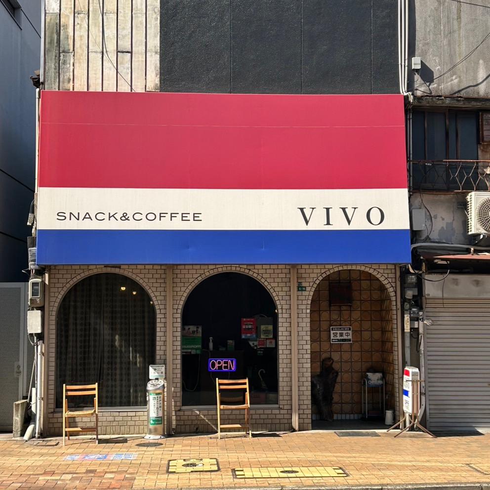
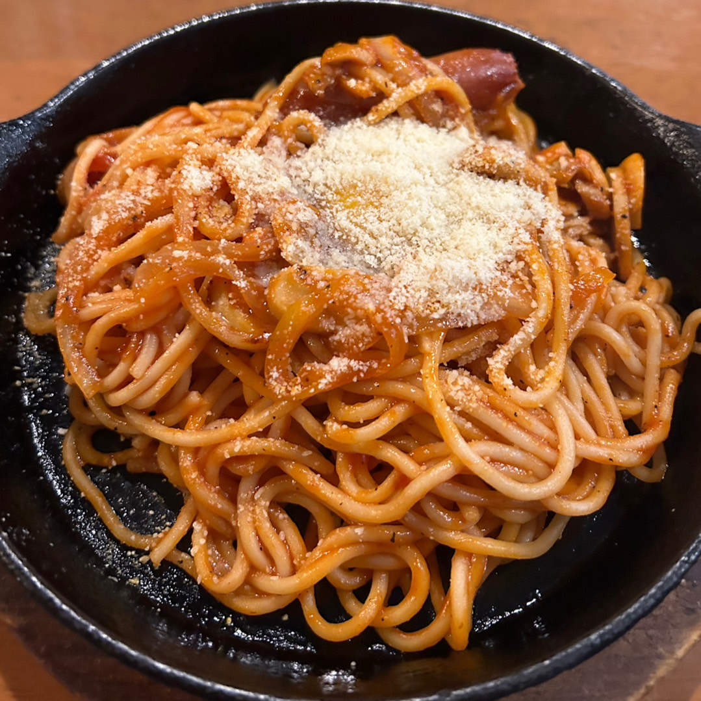

VIVO

クラシックが流れる昭和の香り漂う喫茶店。昼時は、サラリーマンが若者で多く賑わっていますが、回転率が速いので直ぐに料理が食べられます。
価格は比較的安く、味も美味しく、そして何より料理のボリュームも多いため、とりあえず入ってみることをおすすめします。。
住所：〒803-0812 福岡県北九州市小倉北区室町2丁目6-15
最寄り駅:西小倉駅
電話番号：093-571-5641
営業時間：月~土 10時00分~15時00分 17時00分~21時00分 （日曜日は定休日）
席：６卓（カウンター席もあり）
駐車場：なし（周辺にコインパーキングあり）
備考：禁煙 現金・PayPay可
このような方におすすめしたい！
・ガッツリ食べたい方
・時間があまりない方
お昼時は混んでいてすぐ満席になりますが、回転率が速く注文した料理が直ぐに届くので時間があまりない方にもお勧めです。
リーズナブルな値段で量が多くコスパがいいので、ガッツリ食べたい方に是非足を運んでいただきたいです。